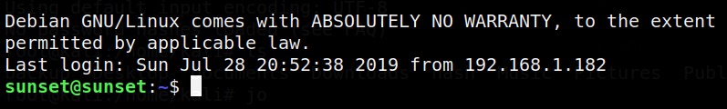

4.1 Connect via ssh (First flag)
a) Log in the system with “ssh” and user “sunset”.
$ssh
sunset@192.168.12.53
Output:

b) List the contents.
$ls
$cat
uses.txt
Output:
5b5b8e9b01ef27a1cc0a2d5fa87d7190
This is the first flag.
Index